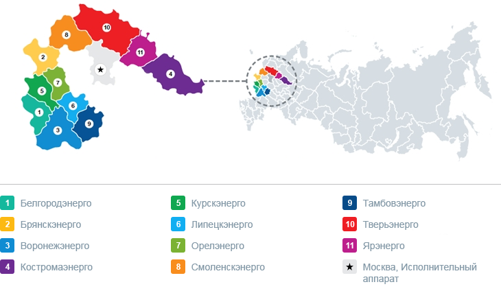

|
|
|---|

|
О компании
ПАО «Россети Центр» – ведущая электросетевая компания России. Компания ведет бизнес на территории 11 областей Центральной части России, обеспечивая электроэнергией население, крупные промышленные компании и предприятия транспорта и сельского хозяйства, социально значимые объекты, осуществляя технологическое присоединение новых потребителей к электрическим сетям. Компания была основана в 2004 г. в процессе реформирования российской электроэнергетики и разделения энергокомпаний по видам деятельности, их последующей региональной интеграции. Сегодня ПАО «Россети Центр» - одна из 14 таких межрегиональных сетевых компаний. Свою деятельность Компания ведет в регионах с устойчивыми перспективами экономического роста, что является одним из конкурентных преимуществ. Компания осуществляет свою деятельность на территории площадью 457,7 тыс. кв км. Передачу и распределение электроэнергии, а также подключение клиентов к электрическим сетям напряжением от 0,4 до 110 кВ обеспечивают 11 филиалов Компании:  В группу «Россети Центр» входят следующие компании - АО "Ярославская электросетевая компания", АО "Воронежская горэлектросеть", АО "Тульские городские электрические сети", ООО "БрянскЭлектро", АО "Ивановская городская электрическая сеть" и АО "Санаторий "Энергетик". |
Дополнительно
|
+7 (495) 747-92-92 Телефон +7 (495) 747-92-95 Факс posta@mrsk-1.ru Электронная почта 8(800)220-0-220 – Бесплатный номер телефона по вопросам перерыров в передачи и качества электрической энергии |
|---|